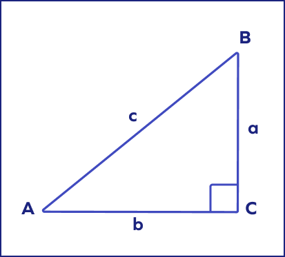

/* Triangle Calculator * takes input of 2 sides lengths to calculate the third side length. * Created by Nathan Perez * Last Edited 25 April 2024 */
Triangle Solver
Right Triangle Calculator

Enter the length of 2 sides to calculate the 3rd.
a:
b:
c:
Enter